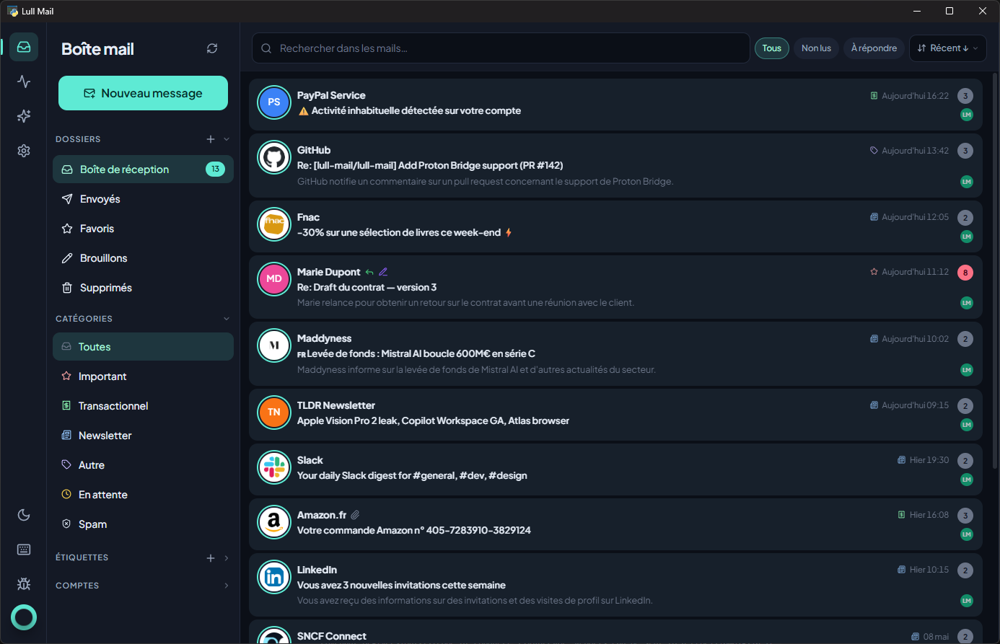
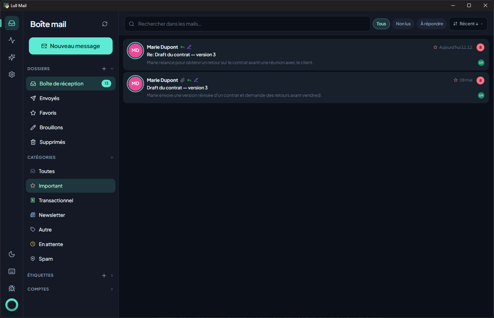
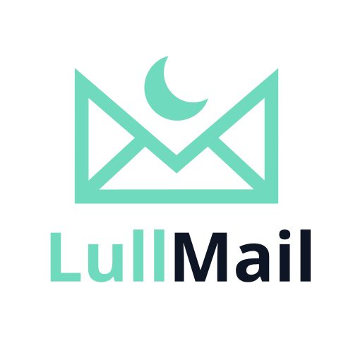

Silent by default. Notification by exception.
You get 80 emails a day. Three of them actually matter. Lull Mail reads everything that comes in, picks out the messages that genuinely deserve your attention, and sends one notification — the right one, at the right moment.


Four jobs, done quietly.
Every email gets classified (important, transactional, newsletter, promo, spam) and summarised in two lines. Importance score from 1 to 10. You see at a glance which message deserves three minutes and which deserves three seconds.
A notification only fires when something genuinely urgent lands. For everything else, radio silence. Your phone gets to be a phone again.
Detects newsletters you haven't read in months. Spots the unsubscribe link in one click. Suggests automatic rules: move, mark read, delete.
No cloud, no SaaS, no account to create with us. A native desktop app that talks straight to your IMAP servers — Gmail, Outlook, iCloud, Yahoo, ProtonMail Bridge, or any standard server.
Honesty about what we don't do.
Keep using Outlook, Gmail Web, Apple Mail. Lull Mail works alongside them, read-only on your mailboxes unless you authorise it to apply rules.
It plugs into your existing accounts. Nobody wants to change email; we don't ask you to.
Your IMAP credentials never leave your machine. The database lives locally on your drive. Want to wipe everything? One button.
We don't sell your emails. We don't index them to target ads. We do nothing except what's written on the box.
Lull Mail isn't trying to replace your inbox. It sits in front of it. Here's how that compares.
| Lull Mail | SaneBox | Mailbutler | Hey | |
|---|---|---|---|---|
| What it is | Native desktop app, layer over your accounts | Cloud service, sorts into IMAP folders | Plugin for Outlook / Apple Mail / Gmail | Standalone email service with new address |
| Keep your existing address | Yes | Yes | Yes | No (@hey.com required) |
| Where your emails live | Your machine (local SQLite) | SaneBox servers + your IMAP | Your provider + Mailbutler cloud for AI | Hey servers |
| Pricing | Free, you pay your own OpenAI usage (~$0.15 / 100 emails) | $7–36 / month | $5–30 / month | $99 / year, flat |
| Works offline (browse synced mail) | Yes | No | Partial | No |
| Open source | Yes (GPL v3) | No | No | No |
| Platforms | Windows, macOS, Linux | Any IMAP client | Outlook, Apple Mail, Gmail web | Web, iOS, Android, macOS |
| Telemetry on your emails | None | Per their privacy policy | Per their privacy policy | Per their privacy policy |
| Replaces your email client | No | No | No (it embeds) | Yes |
What can stay on your machine, stays on your machine.
Lull Mail is free. You pay OpenAI for usage (~$0.15 per 100 emails analysed with gpt-4o-mini). The push-notification service ntfy.sh is free too.
Yes for browsing what's already synced. No for IMAP fetching or AI analysis — those are network calls.
No. They live in the OS keyring (Windows Credential Manager / macOS Keychain / Linux Secret Service). The config file only carries an opaque reference; the real secret is fetched in memory at runtime. For Gmail / Outlook / Yahoo / iCloud you should still use an app password — easier to revoke than your main password if anything goes wrong.
Yes. Lull Mail doesn't write to your servers (read-only by default) and registers nowhere. Uninstall the app and delete your data directory — no trace left.